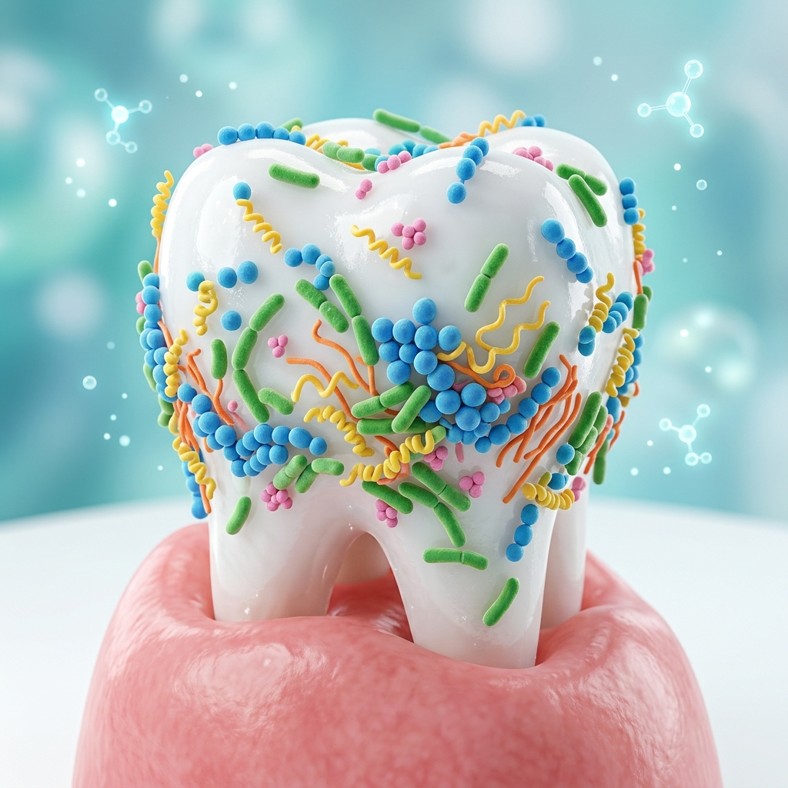

Dentistry News -- ScienceDaily • May 08, 2026
The dental industry is witnessing a significant shift in how we approach gum disease. For decades, the standard method for treating infections has been to eliminate bacteria broadly. However, researchers are now finding that the key to long-term oral health may not be "killing" bacteria, but rather "managing" their behavior.
Recent breakthroughs have uncovered that dental plaque bacteria use complex chemical signals to coordinate their growth and activity. By interrupting these communication pathways—a process often referred to as "quorum sensing"—scientists have successfully reduced disease-linked microbes without harming the beneficial bacteria that protect our mouths.
Our mouths are home to a diverse ecosystem known as the oral microbiome. Most of these bacteria are actually helpful, acting as a first line of defense against pathogens. Traditional treatments can sometimes disrupt this balance. The industry is moving toward "targeted therapy," which offers several potential advantages:
At Dentplant, we keep a close eye on these innovations to ensure our clinical knowledge remains at the cutting edge. While these specific targeted therapies are currently in the advanced research and testing phases, they represent the future of how we will help our patients maintain healthy smiles.
Our commitment to continuous learning means that we are always ready to integrate evidence-based advancements into our practice. Understanding where the industry is heading allows us to provide more informed consultations and proactive care for our patients today.
Dentistry News -- ScienceDaily • May 08, 2026
Ο οδοντιατρικός κλάδος βιώνει μια σημαντική στροφή στον τρόπο με τον οποίο αντιμετωπίζουμε την περιοδοντική νόσο. Για δεκαετίες, η καθιερωμένη μέθοδος για τη θεραπεία των λοιμώξεων ήταν η ευρεία εξάλειψη των βακτηρίων. Ωστόσο, οι ερευνητές διαπιστώνουν τώρα ότι το κλειδί για τη μακροπρόθεσμη στοματική υγεία μπορεί να μην είναι η «θανάτωση» των βακτηρίων, αλλά η «διαχείριση» της συμπεριφοράς τους.
Πρόσφατες ανακαλύψεις αποκάλυψαν ότι τα βακτήρια της οδοντικής πλάκας χρησιμοποιούν πολύπλοκα χημικά σήματα για να συντονίσουν την ανάπτυξη και τη δραστηριότητά τους. Διακόπτοντας αυτές τις οδούς επικοινωνίας —μια διαδικασία που συχνά αναφέρεται ως "quorum sensing"— οι επιστήμονες κατάφεραν να μειώσουν τους μικροοργανισμούς που συνδέονται με ασθένειες χωρίς να βλάψουν τα ευεργετικά βακτήρια που προστατεύουν το στόμα μας.
Το στόμα μας φιλοξενεί ένα ποικίλο οικοσύστημα γνωστό ως στοματικό μικροβίωμα. Τα περισσότερα από αυτά τα βακτήρια είναι στην πραγματικότητα χρήσιμα, δρώντας ως η πρώτη γραμμή άμυνας ενάντια στα παθογόνα. Οι παραδοσιακές θεραπείες μπορούν μερικές φορές να διαταράξουν αυτή την ισορροπία. Η βιομηχανία κινείται προς τη «στοχευμένη θεραπεία», η οποία προσφέρει αρκετά πιθανά πλεονεκτήματα:
Στη Dentplant, παρακολουθούμε στενά αυτές τις καινοτομίες για να διασφαλίσουμε ότι οι κλινικές μας γνώσεις παραμένουν στην αιχμή των εξελίξεων. Παρόλο που αυτές οι συγκεκριμένες στοχευμένες θεραπείες βρίσκονται επί του παρόντος σε στάδια προηγμένης έρευνας και δοκιμών, αντιπροσωπεύουν το μέλλον του τρόπου με τον οποίο θα βοηθάμε τους ασθενείς μας να διατηρούν υγιή χαμόγελα.
Η δέσμευσή μας για συνεχή μάθηση σημαίνει ότι είμαστε πάντα έτοιμοι να ενσωματώσουμε τεκμηριωμένες προόδους στην πρακτική μας. Κατανοώντας προς τα πού κατευθύνεται ο κλάδος, είμαστε σε θέση να παρέχουμε πιο ενημερωμένες συμβουλές και προληπτική φροντίδα για τους ασθενείς μας σήμερα.